|
Yikai Wang is a postdoctoral researcher at Meta, London, working with Prof. Tao Xiang.
Prior to this, he was a research fellow at MMLab@NTU, Nanyang Technological University, Singapore, working with Prof. Chen Change Loy.
He received his Ph.D. in Statistics and B.Sc. in Mathematics from Fudan University, Shanghai, advised by Prof. Yanwei Fu.
Reach out via yi-kai.wang@outlook.comcopied ✓.
Please let me know who you are. |
|
In-Flight KV Cache with Clean Anchors for Faster Autoregressive Video Diffusion.
[arxiv]
[intro]
[video intro: Youtube, Bilibili]
Yikai Wang, Xiao Han, Mengmeng Xu, Juan C. Pérez, Yiannis Douratsos, Sen He, Zijian Zhou, Fei Zhang, Zhaochong An, Juan-Manuel Pérez-Rúa, Chen Change Loy, Tao Xiang.
Preprint, 2026.
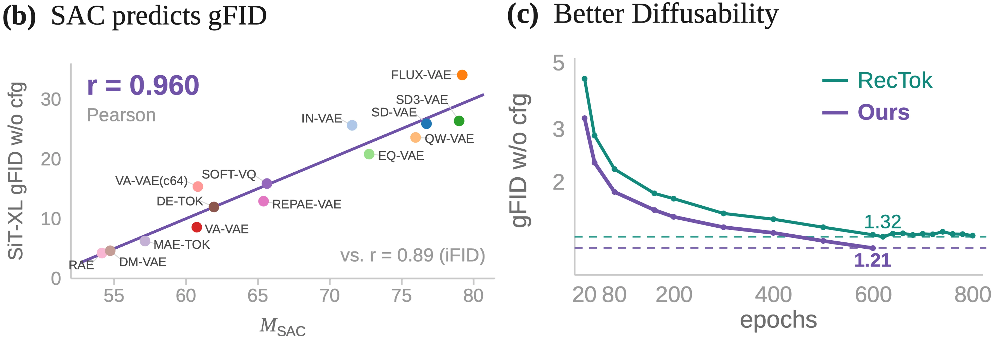
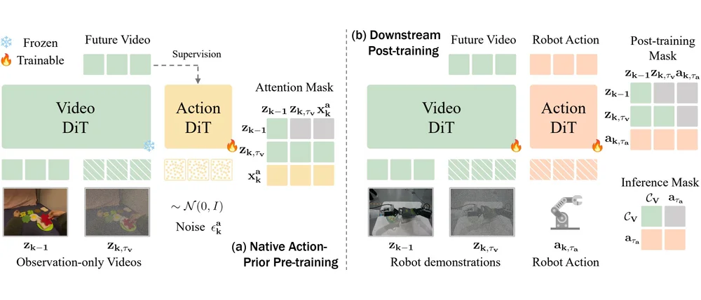
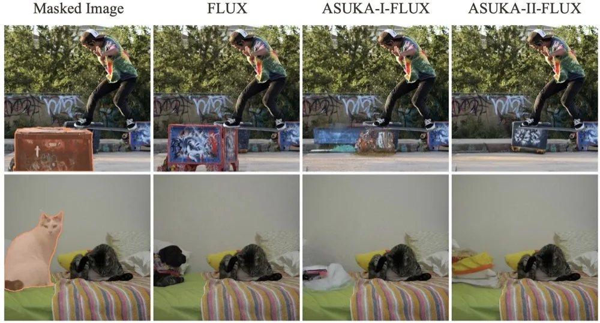
Aligned Stable Inpainting: Mitigating Unwanted Object Insertion and Preserving Color
Consistency.
[arxiv]
Yikai Wang*, Junqiu Yu*, Chenjie Cao, Xiangyang Xue, Yanwei Fu.
Preprint, 2026.
The Pictorial Cortex: Zero-Shot Cross-Subject fMRI-to-Image Reconstruction via Compositional Latent
Modeling.
[arxiv]
Jingyang Huo, Yikai Wang, Yanwei Fu, Jianfeng Feng.
Preprint, 2026.
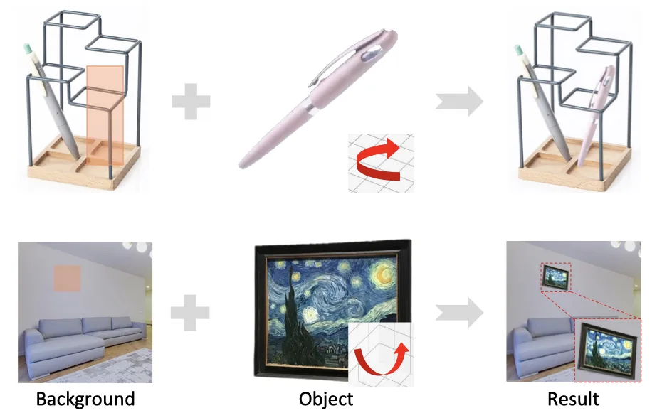
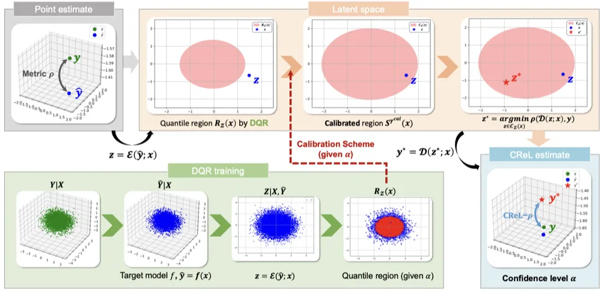
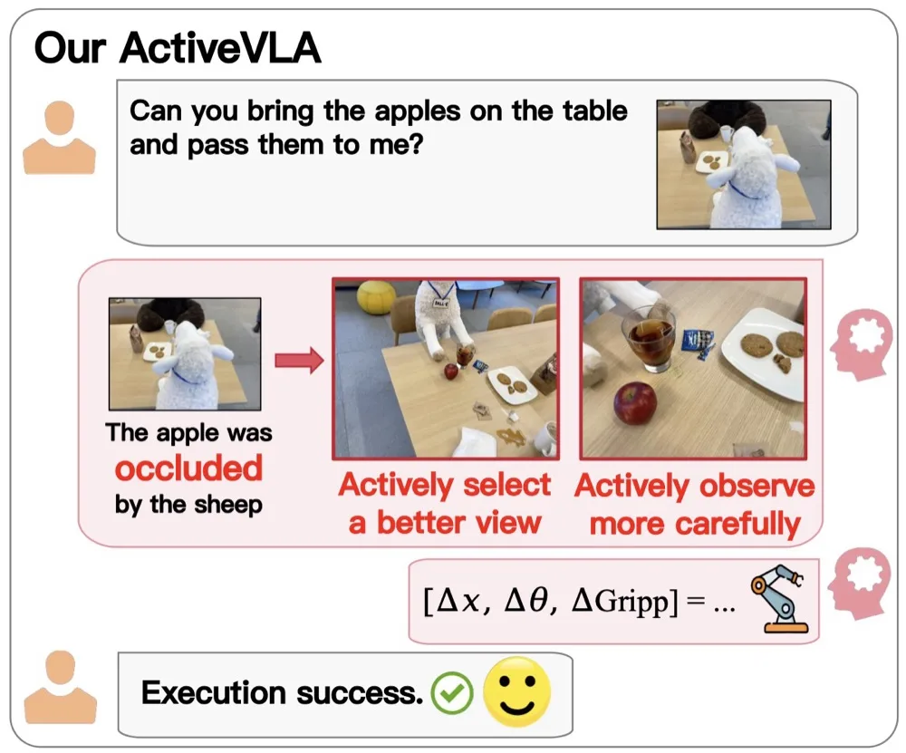
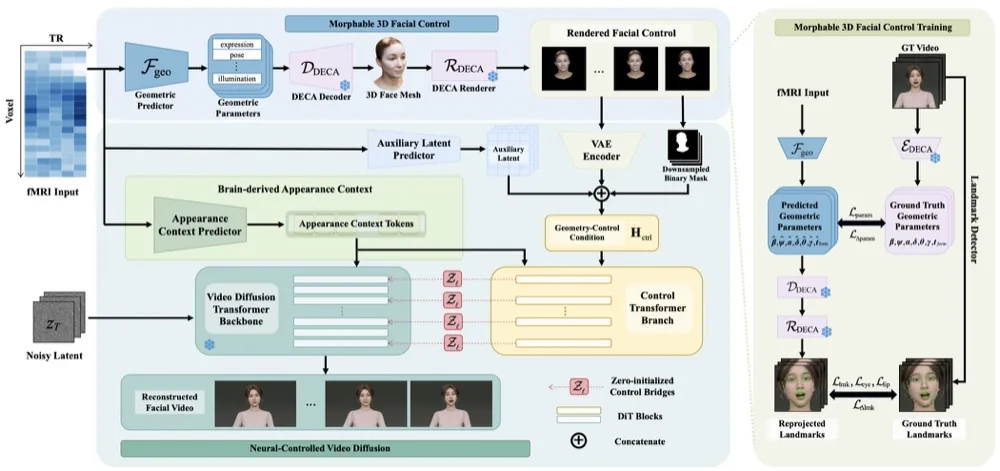
fMRI2Face: Geometry-Guided Neural Decoding Framework and a Full-HD fMRI-Video Dataset for Controllable Digital Human Faces.
[arxiv]
Jingyang Huo, Xiangru Huang, Chentao Shen, Yikai Wang, Yun Wang, Jianxiong Gao, Yulei Xin, Shihao Jin, Yanwei Fu, Jianfeng Feng.
Neurocomputing, 2026.
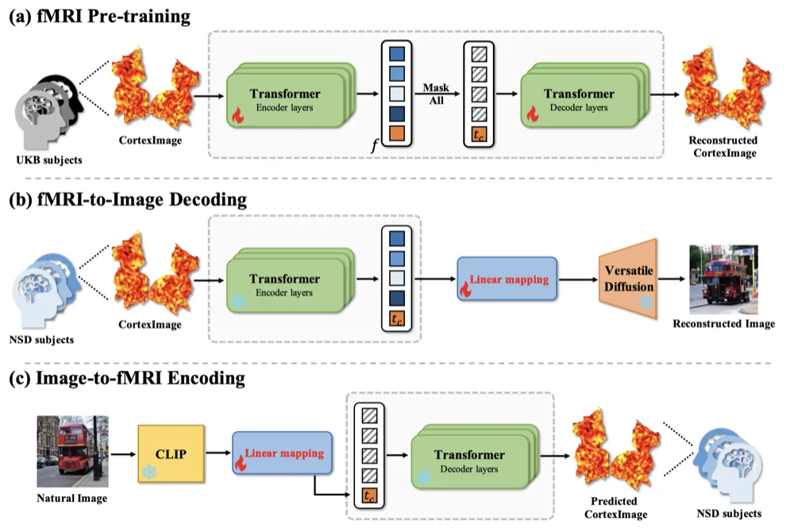
Cross-subject fMRI-to-Image with Visual-cortex 2D Representation and Pre-Training.
[paper]
Xuelin Qian*, Yun Wang*, Yikai Wang, Shijie Zhao, Jianfeng Feng, Yanwei Fu.
JBHI, 2026.
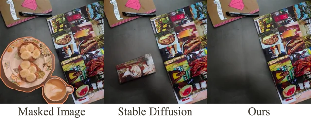
Towards Enhanced Image Inpainting: Mitigating Unwanted Object Insertion and Preserving Color
Consistency.
[arxiv]
[paper]
[full-size PDF]
[code & MISATO dataset]
[intro]
[demo: Youtube, Bilibili]
Yikai Wang*, Chenjie Cao*, Junqiu Yu*, Ke Fan, Xiangyang Xue, Yanwei Fu.
CVPR, 2025. (Highlight, 13.5% of accepted papers)
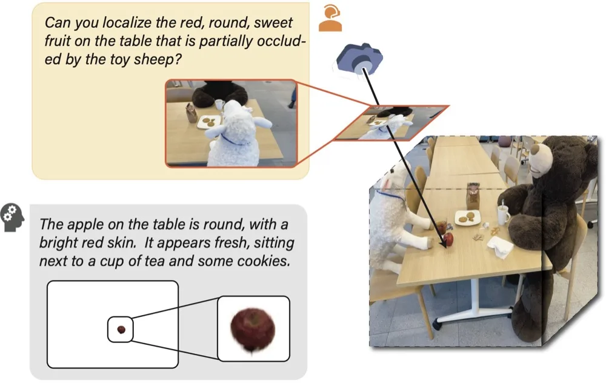
ReasonGrounder: LVLM-Guided Hierarchical Feature Splatting for Open-Vocabulary 3D Visual Grounding and
Reasoning.
[arxiv]
[paper]
[code & dataset]
[intro]
Zhenyang Liu, Yikai Wang, Sixiao Zheng, Tongying Pan, Longfei Liang, Yanwei Fu, Xiangyang Xue.
CVPR, 2025.
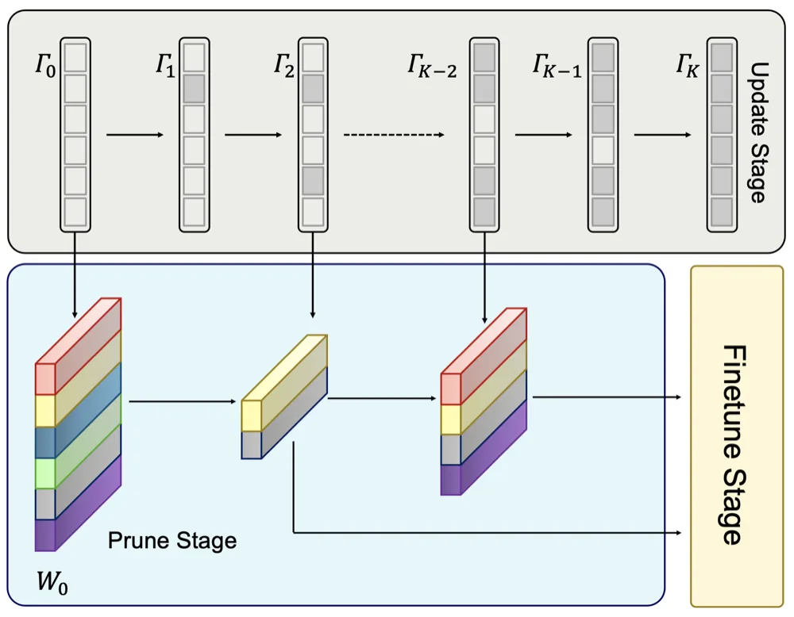
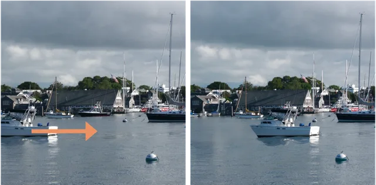
Repositioning the Subject within Image.
[arxiv]
[paper]
[full-size PDF]
[code & ReS dataset]
[intro]
[demo: Youtube, Bilibili]
Yikai Wang, Chenjie Cao, Ke Fan, Qiaole Dong, Yifan Li, Xiangyang Xue, Yanwei Fu.
TMLR, 2024. (J2C Certification, 10% of accepted papers; Poster at ICML 2026)
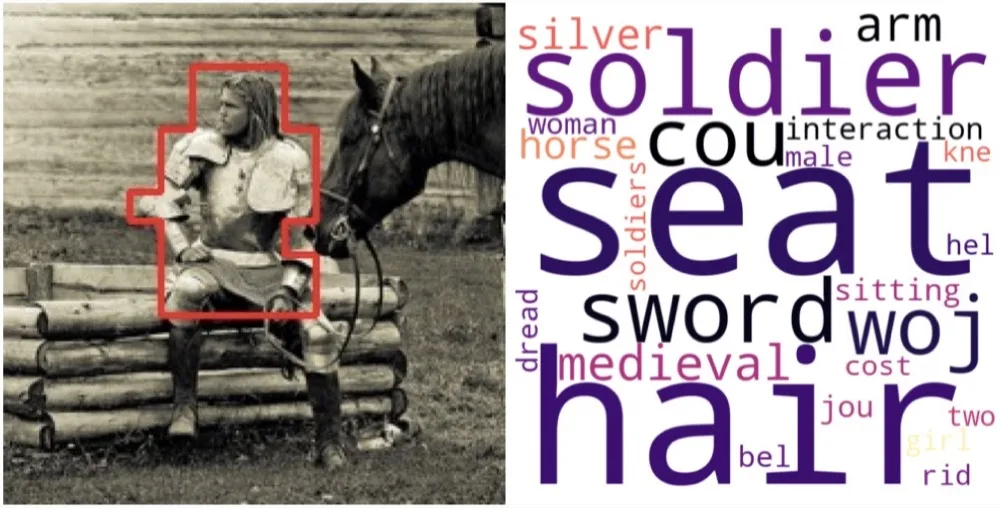
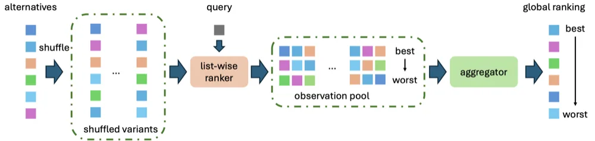
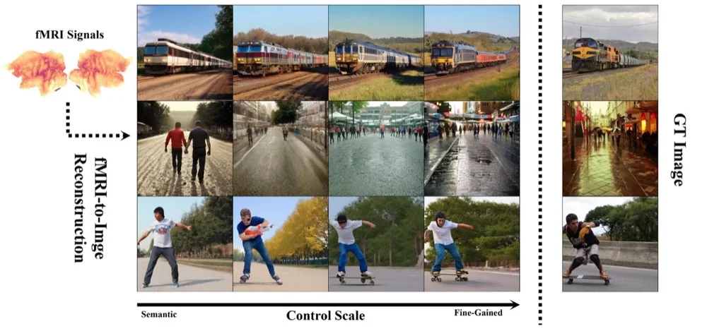
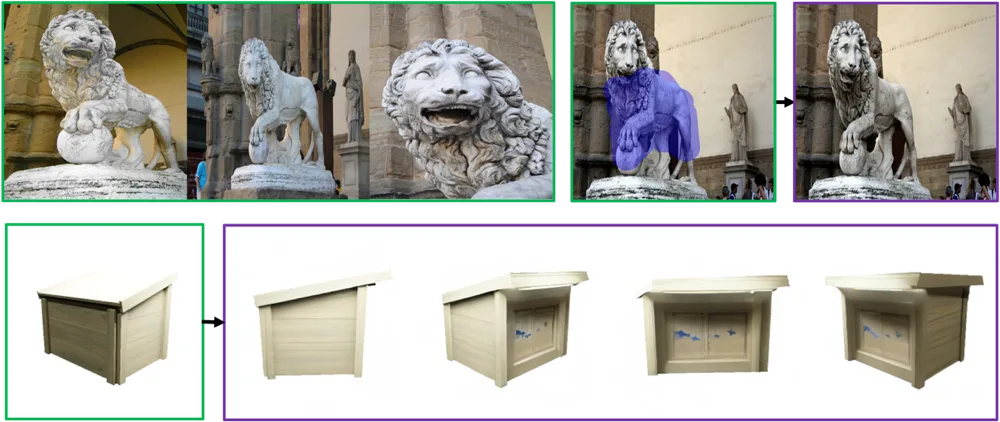
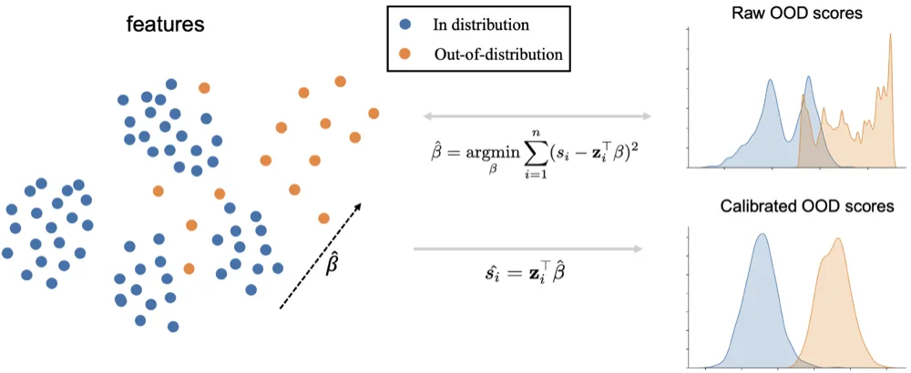
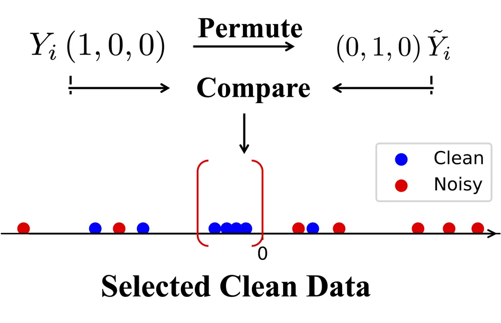
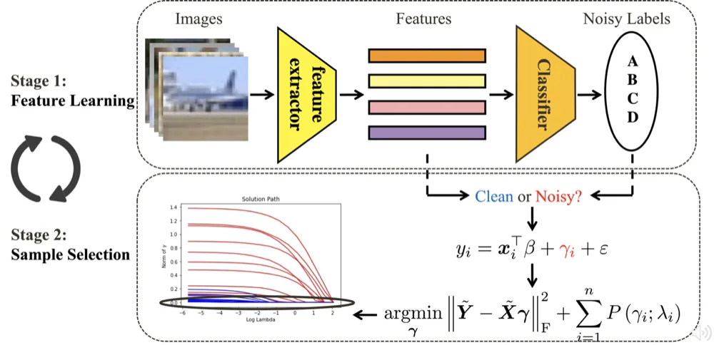
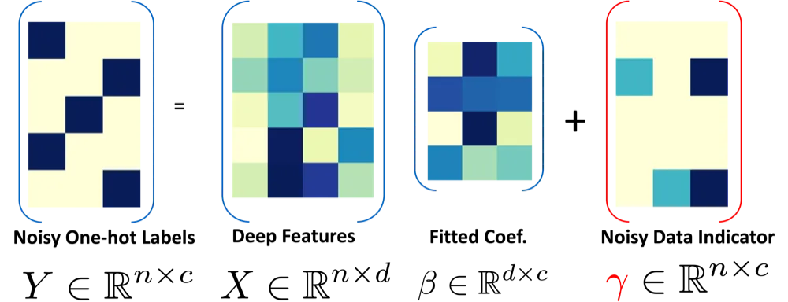
Structured Generative Vision: From Context-Stable Inpainting to Next Visual Granularity Generation.
[slides]
Xi'an Jiaotong University, 2026.05;
Fudan University, 2026.05;
Shanghai Innovation Institute, 2026.05.
Filling Right Canvas based on Left Reference through Generalized Text-to-Image Diffusion
Model.
[slides]
[Bilibili video (in Chinese, starts at 1:18:40)]
Oral presentation at Pre-CVPR@Shanghai,
2024.05.
Advancing Image Inpainting: From Versatility to Consistency.
[slides]
Nanyang Technological University, 2024.04.
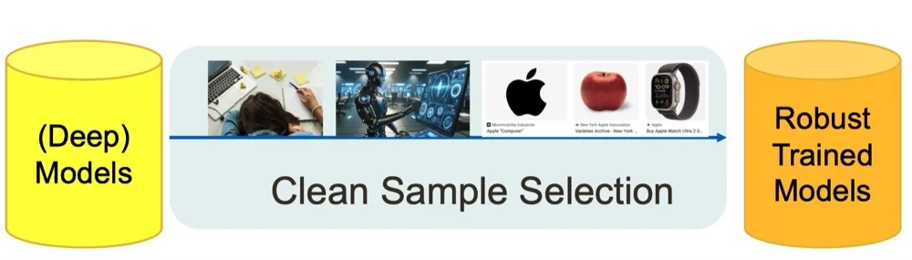
Clean Sample Selection Algorithms with Statistical Sparsity Analysis.
[slides]
Technical University of Munich, 2024.03;
Institute of Science and Technology Austria, 2024.04.
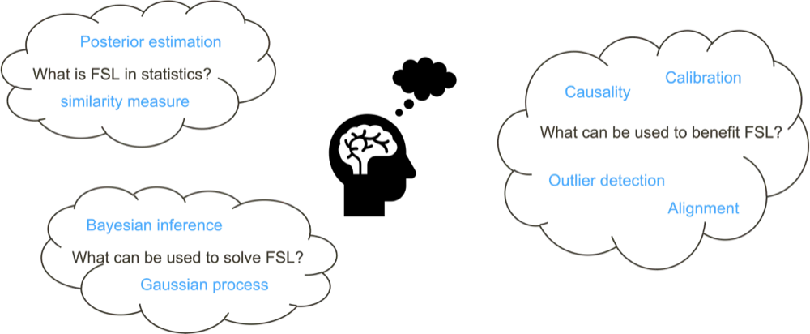
Few-shot Learning by Statistical Methods.
[slides]
CVPR 2023 tutorial, 2023.06:
Few-shot Learning from Meta-Learning, Statistical Understanding to
Applications.
Sparse Learning for Noisy Data Detection.
[slides]
[Youtube]
[Bilibili]
CVPR 2022 tutorial, 2022.06:
Sparse Learning in Neural Networks and Robust Statistical
Analysis.